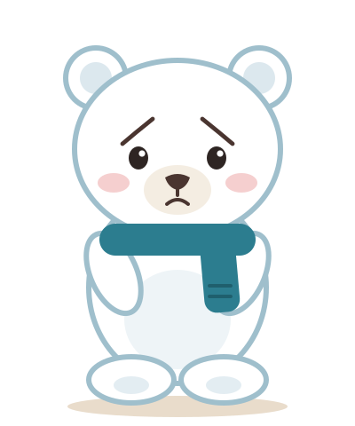
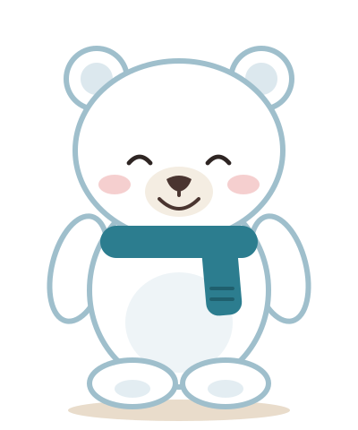
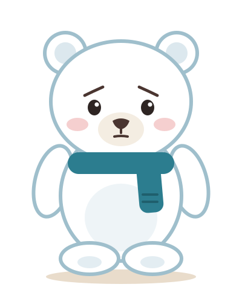
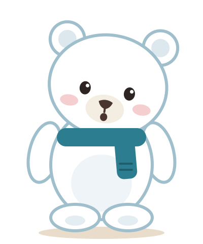

This message may not be real.
It asks you to call a number. Real Windows warnings never do.
Want me to close this page?
Ally companion
Ally's bear sits in the corner of the screen and speaks up only when it matters. The card is the bear's speech: one surface, one button style, and urgency carried by words and the bear's face rather than loud colour.
It asks you to call a number. Real Windows warnings never do.
Want me to close this page?

Only three things change with urgency: the status line, the bear's expression, and whether Ally waits for an answer.

The address is paypa1.example, not paypal.com.
Want me to close this page?

AnyDesk is open while your bank is on screen.
Want me to close AnyDesk?
Scammers often say it's safe to continue.
The page fills the whole screen, says your computer is infected, and gives a phone number to call.
Microsoft never asks you to call from a web page. Your computer is most likely fine.
